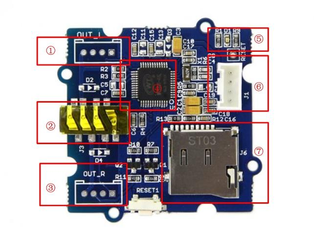
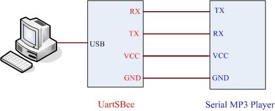
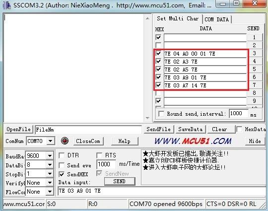

Grove-Serial MP3 Player is a kind of simple MP3 player device whose design is based on a high-quality MP3 audio chip---WT5001. It can support 8KHZ~44.1kHZ sampling frequency MP3 and WAV file formats. This product has several peripheral ports: a standard UART Grove interface, a dual track headphone jack, an external interface and also a Micro SD card interface. You can control the MP3 playback state by sending commands to module via serial port tools, such as switch songs, change the volume and play mode and so on. It seems a simple module, but it owns such strong function. Want to know how the sound quality? Please come to experience it!


The Grove - Serial MP3 Play can be controlled by Arduino/Seeeduino. And there is a Serial_MP3 test code for you to use. I believe you can easily get started. For more detailed information, please refer to the following description. The hardware installation:
The following code includes play mode parameter. You only need to change the parameter to switch the play mode.
/*****************************************************************************/ // Function: control the seeedstudio Grove MP3 player // Hardware: Grove - Serial MP3 Player /*******************************************************************************/ #include <SoftwareSerial.h> SoftwareSerial mp3(2, 3);//modify this with the connector you are using. void setup() { mp3.begin(9600); Serial.begin(9600); delay(100); if (true ==SetPlayMode(0x01)) Serial.println("Set The Play Mode to 0x01, Single Loop Mode."); else Serial.println("Playmode Set Error"); PauseOnOffCurrentMusic(); } void loop() { SetPlayMode(0x01); delay(1000); SetMusicPlay(00,01); delay(1000); SetVolume(0x0E); while(1); } //Set the music index to play, the index is decided by the input sequence //of the music; //hbyte: the high byte of the index; //lbyte: the low byte of the index; boolean SetMusicPlay(uint8_t hbyte,uint8_t lbyte) { mp3.write(0x7E); mp3.write(0x04); mp3.write(0xA0); mp3.write(hbyte); mp3.write(lbyte); mp3.write(0x7E); delay(10); while(mp3.available()) { if (0xA0==mp3.read()) return true; else return false; } } // Pause on/off the current music boolean PauseOnOffCurrentMusic(void) { mp3.write(0x7E); mp3.write(0x02); mp3.write(0xA3); mp3.write(0x7E); delay(10); while(mp3.available()) { if (0xA3==mp3.read()) return true; else return false; } } //Set the volume, the range is 0x00 to 0x1F boolean SetVolume(uint8_t volume) { mp3.write(0x7E); mp3.write(0x03); mp3.write(0xA7); mp3.write(volume); mp3.write(0x7E); delay(10); while(mp3.available()) { if (0xA7==mp3.read()) return true; else return false; } } boolean SetPlayMode(uint8_t playmode) { if (((playmode==0x00)|(playmode==0x01)|(playmode==0x02)|(playmode==0x03))==false) { Serial.println("PlayMode Parameter Error! "); return false; } mp3.write(0x7E); mp3.write(0x03); mp3.write(0xA9); mp3.write(playmode); mp3.write(0x7E); delay(10); while(mp3.available()) { if (0xA9==mp3.read()) return true; else return false; } }
Note:
1. SetPlayMode(uint8_t playmode)
2. SetVolume(uint8_t volume)
3. SetMusicPlay(uint8_t hbyte,uint8_t lbyte)
4. PauseOnOffCurrentMusic(void)
There is another way to control MP3 play mode via serial tool.In this way, you need a UartSBee to connect MP3 to PC. The hardware installation as show below:

After the connection is completed, open the serial tool to send commands. About the specific commands, please see the reference part!

More experience is waiting for you！
Commonly Command Descriptions:
| Command Name | Command Format | Description |
|---|---|---|
| Pause | 7E 02 A3 7E | The music will stop when you send this command at the first time. After resending this command, it will continue. |
| Stop | 7E 02 A4 7E | This command is able to trigger play the next song, or trigger play the first one if the player is playing the last one. |
| Next | 7E 02 A5 7E | This command is able to trigger play the next song, or trigger play the first one if the player is playing the last one. |
| Previous | 7E 02 A6 7E | This command can trigger play the previous song. Sending this command can trigger playback to the last song when you are enjoying the first one. |
| Volume control | 7E 03 A7 1F 7E | There are 32 volume levels from 00 to 31. 00 is mute, and 31 for the maximum volume. |
| Assigned play mode | 7E 03 A9 XX 7E | XX=00 means playing single without playback(default) |
| XX=01 means the single repeated play mode | ||
| XX=02 means that it is all tracks repeated playback mode. | ||
| XX=03 stands for random pattern. |
Grove - Serial MP3 Play Eagle File
Grove - Serial MP3 Play Schematic in PDF format
Demo code on github
datasheet WT5001
Copyright (c) 2008-2016 Seeed Development Limited (www.seeedstudio.com / www.seeed.cc)